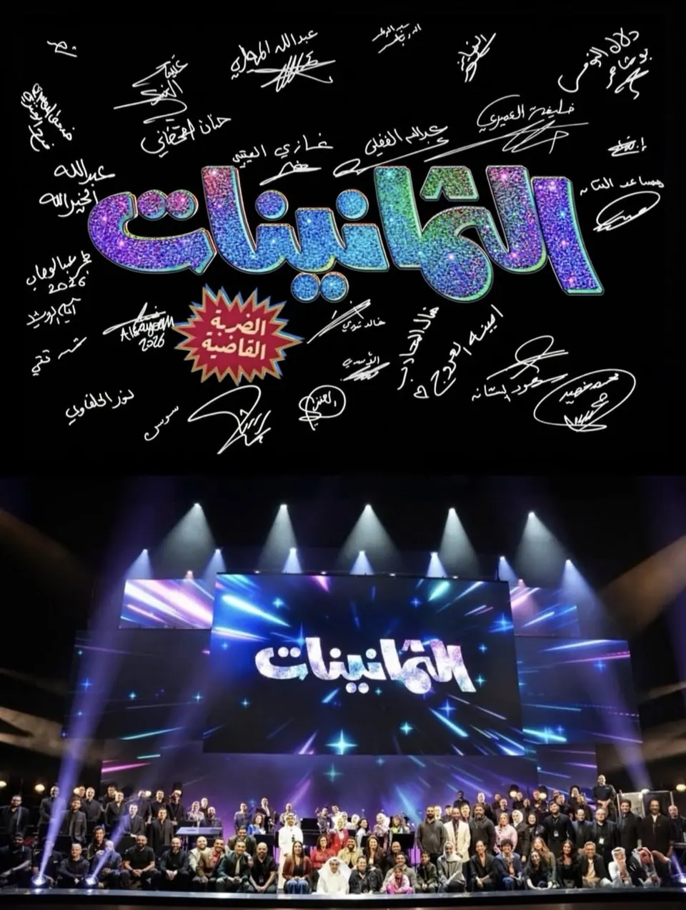

01 Front-of-house engineering
The Eighties…
The Knockout.
الثمانينات.. الضربة القاضية
Front-of-house engineering for the 2026 return of this live musical production at the National Theatre, Sheikh Jaber Al-Ahmad Cultural Centre, Kuwait.
A journey through the music and television memories of the 1980s, presented as part of the centre’s tenth-anniversary celebrations.
- My role
- FOH engineer
- Venue
- National Theatre · JACC
- Location & date
- Kuwait · October 2026
Direction · Jassim Al-Qames
Musical direction · Dr Khaled Noori
Production details · Official JACC listing